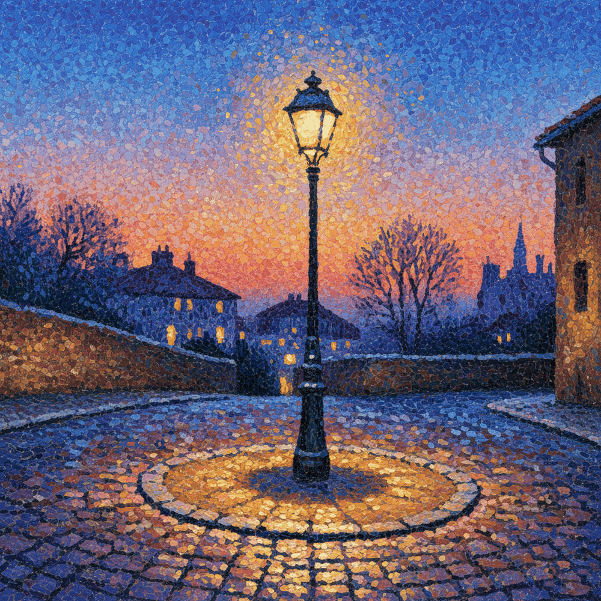
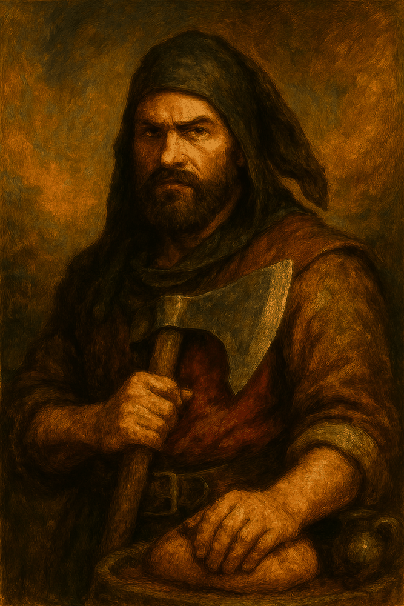

02
FAMILIA: ESTRUCTURACUBESSE STILO
Cubismo Prismático. Descomposición geométrica en la que el sujeto se fragmenta en aristas y planos facetados de óleo denso. Una construcción sólida y volumétrica que rechaza la curva en favor de la pureza estructural.

07
FAMILIA: ATMÓSFERANEOINK
Línea Clara Contemporánea. Ilustración moderna caracterizada por contornos negros definidos de gran finura y rellenos de color planos de alta vibración, con un aire de elegante sobriedad.

08
FAMILIA: ATMÓSFERABORACARBON
Carboncillo Atmosférico. Monocromías de grises y sepias de grano denso y bordes vaporosos. Transmite una melancolía silenciosa y una carga emocional suspendida, como un fragmento de memoria desvanecida.

09
FAMILIA: ESTRUCTURAFRACNEO
Fractalidad Orgánica. Estructuras donde la naturaleza se disuelve en patrones geométricos recursivos. Una mirada hipnótica donde el detalle formal sigue una armonía de repetición matemática.

16
FAMILIA: ENERGÍAEXPNEO
Pincelada Vibrante. Composición al óleo mediante pinceladas secas cortas y discontinuas sobre fondos en penumbra, logrando una luz íntima de ritmo contenido y pausado.

17
FAMILIA: ENERGÍAFUZZTESS
Onirismo Difuso. Ausencia de contornos duros en favor de una textura algodonosa y etérea. Las formas se desvanecen en tránsitos de color de extrema suavidad, como en un estado de duermevela.

24
FAMILIA: ATMÓSFERABORACARBON MONUMENTOS
Carboncillo Arquitectónico. Dibujo académico de gran rigor formal que exalta la solidez estructural y la belleza de la piedra labrada, prescindiendo por completo del color.

25
FAMILIA: ATMÓSFERACAPLIVE
Claroscuro Rembrandt. Atmósfera de gran solemnidad y costumbrismo pictórico. El motivo emerge en ocres cálidos bajo un haz de luz dorada muy concentrado, perdiendo el fondo en una profunda penumbra.

26
FAMILIA: ATMÓSFERACARL_LINE
Línea Clara Humanista. Retratos e ideas descritas con la sutil elegancia de un grafito fino, con tramas suaves de sombreado y respetando el espacio del lienzo de grano rústico.

28
FAMILIA: SPATULA & MATERIAESPATAC
Espátula Impresionista Oriental. Composición estructurada en planos y cortes secos de espátula plana con color puro, evocando la calma contemplativa y el equilibrio del arte zen.

31
FAMILIA: SPATULA & MATERIAOLENATUR
Óleo Realista Sobrio. Paisajismo clásico de pincelada discreta y paleta de colores contenida y fiel a la realidad, inspirada en la tradición académica europea del naturalismo.

32
FAMILIA: ATMÓSFERASINNOIR
Clave Alta sin Negros. Atmósfera diáfana, luminosa y etérea donde se suprimen por completo las sombras duras, transformándolas en tonos grises o azules celestes muy suaves.

34
FAMILIA: ENERGÍAEXPTERICO
Expresionismo Esotérico. Descomposición del plano y los rostros mediante manchas de óleo denso, texturas agrietadas de óxido y cal sucia, evocando desintegración matérica.

35
FAMILIA: ESTRUCTURAPAPERCHIN
Grabado de Papel. Marquetería tridimensional que describe el volumen mediante planos superpuestos y calados de papel, evocando la delicadeza del troquelado oriental.

36
FAMILIA: ATMÓSFERALINEART
Tormenta Lineal. Minimalismo orgánico en el que la elegancia de la silueta se describe a través de un único y sinuoso trazo continuo de tinta negra, sin fondos ni color.

37
FAMILIA: SPATULA & MATERIAIMPASTUS PAINT
Óleo de Relieve Extremo. Escultura pictórica de gran espesor tridimensional. Las pinceladas de óleo húmedo se acumulan creando crestas físicas reales que proyectan sombras.

39
FAMILIA: SPATULA & MATERIAMATERDIGISSE
Digital Impasto Fino. Fusión táctil donde el contorno definido del pincel dinámico sigue la estructura anatómica del sujeto bajo un micro-relieve de textura al óleo de gran finura.

42
FAMILIA: YESO Y LUZGESSOLUX EXTREMUM
Yeso Calcáreo. Relieve calcáreo tridimensional y tosco que esculpe desniveles, grietas profundas e imita el volumen de la propia roca o montaña con gran oclusión física.
43
FAMILIA: YESO Y LUZGESSOLUX MONOCHROMA
Silencio Blanco Yeso. Eliminación completa de la gama de color para centrar la mirada en las luces, las sombras y las grietas físicas del relieve blanco tiza sobre stucco.

44
FAMILIA: YESO Y LUZGESSOLUX AZURITE
Azurita Mineral. Soporte de yeso pigmentado en un místico y profundo azul lapislázuli ultramar, coronado por sutiles destellos e incrustaciones cobrizas.

45
FAMILIA: YESO Y LUZGESSOLUX IRIS
Yeso Irisado. Relieve fino de stucco acrílico bañado por la refracción de un gradiente de prisma de arcoíris difuso en tonos pastel muy sutiles.

46
FAMILIA: SPATULA & MATERIAESPATAC-EXTREME
Espátula Extrema. Capas monumentales de óleo grueso superpuestas como costras o escamas secas al sol, de gran tridimensionalidad y volumen matérico rústico.

47
FAMILIA: ATMÓSFERANEBULÍNICO
Bruma y Mancha Introspectiva. Quietud y neblina densa húmeda en tonos grises y azulados, donde los contornos se disuelven y emergen toques aislados y sutiles de color cálido naranja o rojo.

48
FAMILIA: ESTRUCTURABESSELUXY L
Nueva colección en proceso de catalogación.